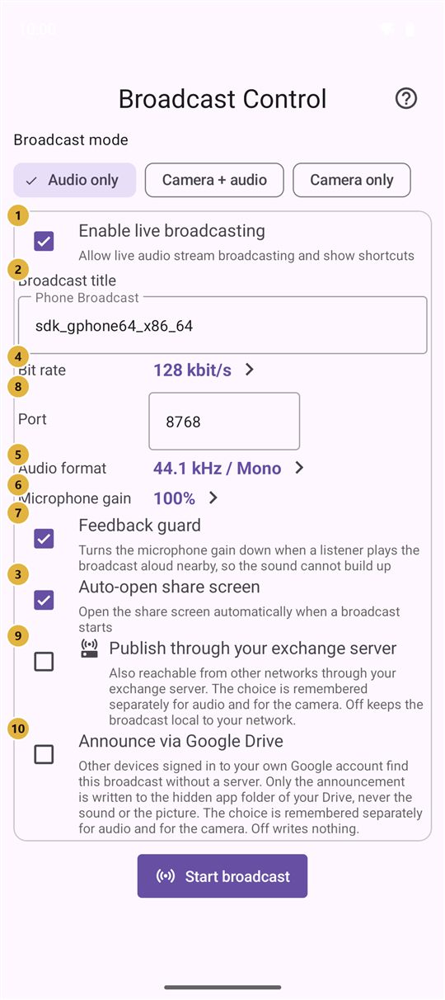
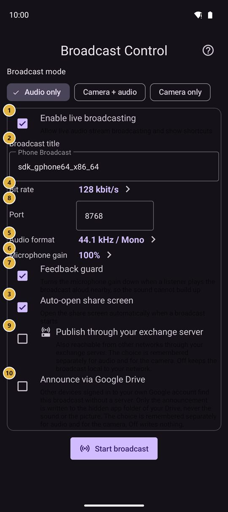

Broadcast settings
What this is for
The choices that shape your broadcasts: what it is called, how good it sounds, and where it can be reached. They are the Broadcast page of Settings, opened from the settings menu or by Broadcast settings on the Broadcast Control screen, and are kept for next time. While live broadcasting is off the page shows only the way to turn it on, on the General page.


In this order
These settings have no fixed order. They are grouped below by what they do.
The elements
The broadcast
1Broadcast titleThe name listeners see.
Shown in the listener's channel list. Leave it empty to use the default name, Phone Broadcast.
Sound
3Bit rateHow much data a second of sound takes.
A higher rate sounds cleaner and uses more network. Pick a lower one for a weak connection.
4Audio formatThe sampling rate and mono or stereo.
Shows the sampling rate in kHz and whether the sound is Mono or Stereo. Stereo carries more data than mono.
5Microphone gainHow loud the microphone is.
Raises or lowers the microphone level for everyone who listens.
6Feedback guardStops a howl between phones.
Turns the microphone gain down when a listener plays the broadcast aloud nearby, so the sound cannot build up. A warning on the Broadcast Control screen tells you when it acted.
Reaching listeners
7PortThe network port of the broadcast.
Devices on your network connect to this port. Change it only if another program already uses the default one.
- Undo
- Type the previous number.
8Announce via Google Drive: audioAnnounce the broadcast through your Google Drive.
Other devices signed in to your own Google account find this broadcast without a server. Only the announcement is written to the hidden app folder of your Drive, never the sound or the picture. Off writes nothing.
- Undo
- Turn it off.
9Announce via Google Drive: cameraThe same choice for the camera modes.
The two camera modes share this choice; the row above is for audio broadcasts. It works the same way.
- Undo
- Turn it off.